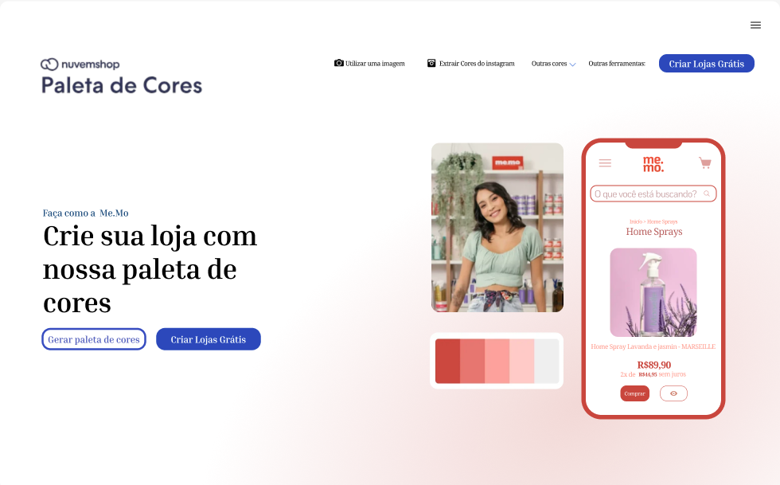

Pix-Bus
Design proposto para um aplicativo de recarga para cartões de transporte público.

Sea Saver
Design proposto para um site que aborda a problematização da poluição dos oceanos.

NuvemShop
Página de login inspirada na loja NuvemShop.